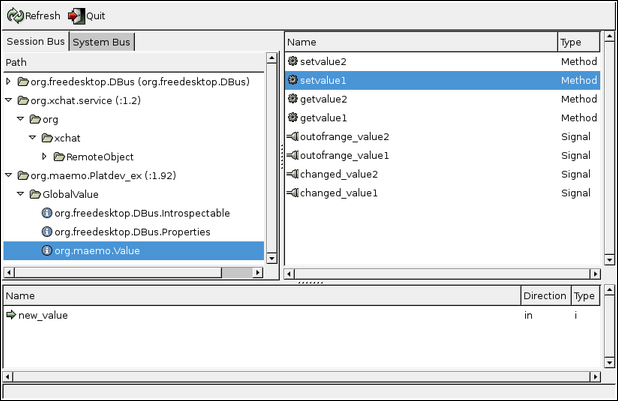

In order to support runtime binding of GTK+
widgets to interpreted languages, an somewhat complicated system for
implementing object oriented machinery for C was developed. Depending on
your particular viewpoint, this system is either called GObject or
GType. GType is the low-level runtime type system which is used to
implement GObjects and GObjects are the implementations of objects using
the GType framework. For an short introduction about GObjects, please
see the Wikipedia entry on GType.
GObject/GType is part of GLib, but one might note that most of GLib is
useable without the GType part of the library. In fact, the
GObject/GType functionality is separated into its own library (libgobject).
We will be interested in the GType in order to implement a very simple object that will be published over the D-Bus. This also means that we can forego some of the inherent complexity involved in implementing a fully fledged GObject. For this reason, while our object will be usable over the D-Bus, it might not have all the support required to use it directly as a GObject (full dynamic type registration and properties are missing).
Our implementation will be a simple non-inheriting stand-alone class,
implementing an interface to access and modify two private members: value1 and value2, first of which is an 32-bit signed integer, and the second a gdouble.
We'll need to implement the per-class constructor as well as the per-object constructor. Both of these will be quite short for the first version of the implementation.
Since our primary objective is to make the object available over
D-Bus, we'll start by covering one of the easiest way of achieving this:
the dbus-bindings-tool. The tool will generate a lot of the bindings code for both client and server side. As its input, it uses an XML file describing the interface for the service that we're implementing.
We'll start by describing one method in XML. Each method is described with a separate method element, whose name
attribute is the name of the method to be generated (this name will be
copied into the generated stub code automatically by the tool). The
first method is setvalue1, which will get one argument, new_value, which is an 32-bit signed integer:
<!-- setvalue1(int newValue): sets value1 --> <method name="setvalue1"> <arg type="i" name="new_value" direction="in"/> </method>
[ A single D-Bus method definition (glib-dbus-sync/value-dbus-interface.xml) ]
Each argument needs to be defined explicitly with the arg element. The type
attribute is required, since it will define the data type for the
argument. Arguments are sometimes called parameters when used with D-Bus
methods. Each argument needs to specify the "direction" of the
argument. Parameters for method calls are "going into" the service,
hence the correct content for the direction attribute is in. Return values from method calls are "coming out" of the service. Hence their direction will be out. If a method call doesn't return any value (returns void), then no argument with the direction out needs to be specified.
Also note that D-Bus by itself, does not limit the number of return arguments. C language supports only one return value from a function, but a lot of the higher level languages do not have this restriction.
The following argument types are supported for D-Bus methods (with respective closest types in GLib):
b: boolean (gboolean)y: 8-bit unsigned integer (guint8)q/n: 16-bit unsigned/signed integer (guint16/gint16)u/i: 32-bit unsigned/signed integer (guint32/gint32)t/x: 64-bit unsigned/signed integer (guint64/gint64)d: IEEE 754 double precision floating point number (gdouble)s: UTF-8 encoded text string with NUL termination (only one NUL allowed) (gchar* with additional restrictions)a: Array of the following type specification (case-dependent)o/g/r/(/)/v/e/{/}: Complex types, please see the official D-Bus documentation on type signatures.From the above list we see that setvalue1 will accept one 32-bit signed integer argument (new_value).
The name of the argument will affect the generated stub code prototypes
(not the implementation) but is quite useful for documentation and also
for D-Bus introspection (which will be covered later).
We next have the interface specification of another method: getvalue1, which will return the current integer value of the object. It has no method call parameters (no arguments with direction="in") and only returns one 32-bit signed integer:
<!-- getvalue1(): returns the first value (int) --> <method name="getvalue1"> <arg type="i" name="cur_value" direction="out"/> </method>
[ A method that returns data (glib-dbus-sync/value-dbus-interface.xml) ]
Naming of the return arguments is also supported in D-Bus (as above). This will not influence the generated stub code, but serves as additional documentation.
We'll need to bind the methods to a specific (D-Bus) interface, and this is achieved by placing the method elements within an interface element. The interface name
-attribute is optional, but very much recommended (otherwise the
interface becomes unnamed and provides less useful information on
introspection).
You can implement multiple interfaces in the same object, and if this would be the case, you'd then list multiple interface elements within the node element. The node
element is the "top-level" element in any case. In our case, we only
implement one explicit interface (the binding tools will add the
introspection interfaces automatically, so specifying them is not
necessary in the XML). And so, we end up with the minimum required interface XML file:
<?xml version="1.0" encoding="UTF-8" ?> <node> <interface name="org.maemo.Value"> <!-- getvalue1(): returns the first value (int) --> <method name="getvalue1"> <arg type="i" name="cur_value" direction="out"/> </method> <!-- setvalue1(int newValue): sets value1 --> <method name="setvalue1"> <arg type="i" name="new_value" direction="in"/> </method> </interface> </node>
[ Minimal valid interface specification for the two methods ]
The minimal interface specification is then extended by adding the correct reference to the proper DTD. This will allow validation tools to work automatically with the XML file. We also add methods to manipulate the second value. The full interface file will now contain comments, describing the purpose of the interface and the methods. This is highly recommended if you plan to publish your interface at some point, as the bare XML does not carry semantic information.
<?xml version="1.0" encoding="UTF-8" ?> <!-- This maemo code example is licensed under a MIT-style license, that can be found in the file called "License" in the same directory as this file. Copyright (c) 2007 Nokia Corporation. All rights reserved. --> <!-- If you keep the following DOCTYPE tag in your interface specification, xmllint can fetch the DTD over the Internet for validation automatically. --> <!DOCTYPE node PUBLIC "-//freedesktop//DTD D-Bus Object Introspection 1.0//EN" "http://standards.freedesktop.org/dbus/1.0/introspect.dtd"> <!-- This file defines the D-Bus interface for a simple object, that will hold a simple state consisting of two values (one a 32-bit integer, the other a double). The interface name is "org.maemo.Value". One known reference implementation is provided for it by the "/GlobalValue" object found via a well-known name of "org.maemo.Platdev_ex". --> <node> <interface name="org.maemo.Value"> <!-- Method definitions --> <!-- getvalue1(): returns the first value (int) --> <method name="getvalue1"> <!-- NOTE Naming arguments is not mandatory, but is recommended so that D-Bus introspection tools are more useful. Otherwise the arguments will be automatically named "arg0", "arg1" and so on. --> <arg type="i" name="cur_value" direction="out"/> </method> <!-- getvalue2(): returns the second value (double) --> <method name="getvalue2"> <arg type="d" name="cur_value" direction="out"/> </method> <!-- setvalue1(int newValue): sets value1 --> <method name="setvalue1"> <arg type="i" name="new_value" direction="in"/> </method> <!-- setvalue2(double newValue): sets value2 --> <method name="setvalue2"> <arg type="d" name="new_value" direction="in"/> </method> </interface> </node>
[ The interface definition for the simplistic dual-value service (glib-dbus-sync/value-dbus-interface.xml) ]
When dealing with automatic code generation, it is quite useful to
also automate testing of the "source files" (XML in this case). One
important validation technique for XML is verifying for well-formedness (all XML files need to satisfy the rules in XML spec 1.0). Another is validating the structure of XML (elements
are nested correctly, that only correct elements are present and that
element attributes and data is legal). Structural validation rules are
described by a DTD (Document Type Definition) document for the XML format that your file is supposed to adhere to. The DTD is specified in the XML,within the DOCTYPE processing directive.
This is still not perfect, as DTD validation can only check for syntax and structure, but not meaning/semantics.
We'll add a target called checkxml to the Makefile so that it can be run whenever we want to check the validity of our interface XML.
# One extra target (which requires xmllint, from package libxml2-utils) # is available to verify the well-formedness and the structure of the # interface definition xml file. # # Use the 'checkxml' target to run the interface XML through xmllint # verification. You'll need to be connected to the Internet in order # for xmllint to retrieve the DTD from fd.o (unless you setup local # catalogs, which are not covered here). # ... Listing cut for brevity ... # Interface XML name (used in multiple targets) interface_xml := value-dbus-interface.xml # ... Listing cut for brevity ... # Special target to run DTD validation on the interface XML. Not run # automatically (since xmllint isn't always available and also needs # Internet connectivity). checkxml: $(interface_xml) @xmllint --valid --noout $< @echo $< checks out ok
[ Integrating xmllint into makefiles (glib-dbus-sync/Makefile) ]
[sbox-CHINOOK_X86: ~/glib-dbus-sync] > make checkxml value-dbus-interface.xml checks out ok
[ Running the validation target on a valid interface specification ]
Just to demonstrate what kind of error messages to expect when there are problems in the XML, we modify the valid interface specification slightly by adding one invalid element (invalidElement) and by removing one starting tag (method).
[sbox-CHINOOK_X86: ~/glib-dbus-sync] > make checkxml
value-dbus-interface.xml:36: element invalidElement: validity error :
No declaration for element invalidElement
</invalidElement>
^
value-dbus-interface.xml:53: parser error :
Opening and ending tag mismatch: method line 39 and interface
</interface>
^
value-dbus-interface.xml:54: parser error :
Opening and ending tag mismatch: interface line 22 and node
</node>
^
value-dbus-interface.xml:55: parser error :
Premature end of data in tag node line 21
^
make: *** [checkxml] Error 1
The first error (validity error) is detected because the file doesn't adhere to the DTD. The other errors (parser errors) are detected because the file is no longer a well-formed XML document.
If you'd have your makefile targets depend on checkxml,
you could integrate the validation into the process of your build.
However, as was noted before, it might not be always the best solution.
We can now proceed to generate the "glue" code that will implement
the mapping from GLib into D-Bus. We will use the generated code later
on, but it is instructive to see what the dbus-binding-tool program generates.
We'll expand the Makefile to invoke the tool whenever the interface XML changes and store the resulting glue code separately for both client and server.
# Define a list of generated files so that they can be cleaned as well cleanfiles := value-client-stub.h \ value-server-stub.h # ... Listing cut for brevity ... # If the interface XML changes, the respective stub interfaces will be # automatically regenerated. Normally this would also mean that your # builds would fail after this since you'd be missing implementation # code. value-server-stub.h: $(interface_xml) dbus-binding-tool --prefix=value_object --mode=glib-server \ $< > $@ value-client-stub.h: $(interface_xml) dbus-binding-tool --prefix=value_object --mode=glib-client \ $< > $@ # ... Listing cut for brevity ... clean: $(RM) $(targets) $(cleanfiles) *.o
[ dbus-binding-tool support for make (glib-dbus-sync/Makefile) ]
We pass two parameters for the dbus-binding-tool program. The --prefix
parameter is used to tell what text should be prefixed to all generated
structure and function names. This will help avoid name-space
collisions when we pull the generated glue files back into our programs.
We'll use value_object since it seems like a logical
prefix for our project. You will probably want to use a prefix that
isn't used in your code (even in the object implementation in server).
This way you don't risk reusing the same names that are generated with
the tool.
The second parameter will select what kind of output the tool will
generate. At the moment, the tool only supports generating GLib/D-Bus
bindings, but this might change in the future. Also, we need to select
which "side" of the D-Bus we're generating the bindings for. The -client side is for code that wishes to use GLib to access the Value object implementation over D-Bus. The -server side is respectively for the implementation of the Value object.
Running the tool will result in the two header files:
[sbox-CHINOOK_X86: ~/glib-dbus-sync] > make value-server-stub.h value-client-stub.h dbus-binding-tool --prefix=value_object --mode=glib-server \ value-dbus-interface.xml > value-server-stub.h dbus-binding-tool --prefix=value_object --mode=glib-client \ value-dbus-interface.xml > value-client-stub.h [sbox-CHINOOK_X86: ~/glib-dbus-sync] > ls -la value*stub.h -rw-rw-r-- 1 user user 5184 Nov 21 14:02 value-client-stub.h -rw-rw-r-- 1 user user 10603 Nov 21 14:02 value-server-stub.h
[ Creating the glue code files ]
We'll start from the object implementation in a bit, but first let's see what the tool left us with, starting with the server stub file:
/* Generated by dbus-binding-tool; do not edit! */ /*... Listing cut for brevity ...*/ #include <dbus/dbus-glib.h> static const DBusGMethodInfo dbus_glib_value_object_methods[] = { { (GCallback) value_object_getvalue1, dbus_glib_marshal_value_object_BOOLEAN__POINTER_POINTER, 0 }, { (GCallback) value_object_getvalue2, dbus_glib_marshal_value_object_BOOLEAN__POINTER_POINTER, 47 }, { (GCallback) value_object_setvalue1, dbus_glib_marshal_value_object_BOOLEAN__INT_POINTER, 94 }, { (GCallback) value_object_setvalue2, dbus_glib_marshal_value_object_BOOLEAN__DOUBLE_POINTER, 137 }, }; const DBusGObjectInfo dbus_glib_value_object_object_info = { 0, dbus_glib_value_object_methods, 4, "org.maemo.Value\0getvalue1\0S\0cur_value\0O\0F\0N\0i\0\0" "org.maemo.Value\0getvalue2\0S\0cur_value\0O\0F\0N\0d\0\0" "org.maemo.Value\0setvalue1\0S\0new_value\0I\0i\0\0" "org.maemo.Value\0setvalue2\0S\0new_value\0I\0d\0\0\0", "\0", "\0" };
[ The method table and object introspection data (glib-dbus-sync/value-server-stub.h) ]
We're interested in the method table mainly because it lists the names of the functions that we need to implement: value_object_getvalue1, value_object_getvalue2, value_object_setvalue1 and value_object_setvalue2.
Each entry in the table consists of a function address, and the
function to use to marshal data from/to GLib/D-Bus (the functions that
start with dbus_glib_marshal_*). The marshaling functions are defined in the same file, but were omitted from the listing above.
Marshaling in its most generic form means the conversion of parameters or arguments from one format to another, in order to make two different parameter passing conventions compatible. It is a common feature found in almost all RPC mechanisms. Since GLib has its own type system (which we'll see shortly) and D-Bus its own, it would be very tedious to write the conversion code manually. This is where the binding generation tool really helps.
The other interesting feature of the above listing is the _object_info
structure. It will be passed to the D-Bus daemon when we're ready with
our object and wish to publish it on the bus (so that clients may invoke
methods on it). The very long string (that contains binary zeroes) is
the compact format of the interface specification. You will see
similarities with the names in the string with the names of the
interface, methods and arguments that we declared in the XML. It is also an important part of the D-Bus introspection mechanism which we'll cover at the end of this chapter.
As the snippet says at the very first line, it should never be edited manually. This holds true while you use the XML file as the source of your interface. It is also possible to use the XML only once, when you start your project, and then just start copy-pasting the generated glue code around while discarding the XML file and dbus-binding-tool.
Needless to say, this makes maintenance of the interface much more
difficult and isn't really recommended. We will not edit the generated
stub code in this material.
We'll next continue with the server implementation for the functions that are called via the method table.
We start with the per-instance and per-class state structures for our
object. The per-class structure contains only the bare minimum contents
which is required from all classes in GObject. The per-instance
structure also contains the required "parent object" state (GObject) but also includes the two internal values (value1 and value2) with which we'll be working for the rest of this example:
/* This defines the per-instance state. Each GObject must start with the 'parent' definition so that common operations that all GObjects support can be called on it. */ typedef struct { /* The parent class object state. */ GObject parent; /* Our first per-object state variable. */ gint value1; /* Our second per-object state variable. */ gdouble value2; } ValueObject; /* Per class state. For the first Value implementation we only have the bare minimum, that is, the common implementation for any GObject class. */ typedef struct { /* The parent class state. */ GObjectClass parent; } ValueObjectClass;
[ Per class and per instance state structures for the Value (glib-dbus-sync/server.c) ]
We then continue by defining convenience macros in a way expected for all GTypes. The G_TYPE_-macros
are defined in GType and include the magic by which our object
implementation doesn't need to know the internal specifics of GType so
much. The GType macros are described in the GObject API reference for GType at http://maemo.org/api_refs/4.0/gobject/index.html.
We'll be using some of the macros internally in our implementation later on.
/* Forward declaration of the function that will return the GType of the Value implementation. Not used in this program since we only need to push this over the D-Bus. */ GType value_object_get_type(void); /* Macro for the above. It is common to define macros using the naming convention (seen below) for all GType implementations, and that's why we're going to do that here as well. */ #define VALUE_TYPE_OBJECT (value_object_get_type()) #define VALUE_OBJECT(object) \ (G_TYPE_CHECK_INSTANCE_CAST((object), \ VALUE_TYPE_OBJECT, ValueObject)) #define VALUE_OBJECT_CLASS(klass) \ (G_TYPE_CHECK_CLASS_CAST((klass), \ VALUE_TYPE_OBJECT, ValueObjectClass)) #define VALUE_IS_OBJECT(object) \ (G_TYPE_CHECK_INSTANCE_TYPE((object), \ VALUE_TYPE_OBJECT)) #define VALUE_IS_OBJECT_CLASS(klass) \ (G_TYPE_CHECK_CLASS_TYPE((klass), \ VALUE_TYPE_OBJECT)) #define VALUE_OBJECT_GET_CLASS(obj) \ (G_TYPE_INSTANCE_GET_CLASS((obj), \ VALUE_TYPE_OBJECT, ValueObjectClass)) /* Utility macro to define the value_object GType structure. */ G_DEFINE_TYPE(ValueObject, value_object, G_TYPE_OBJECT)
[ Macros for the Value object (and class) for convenience (glib-dbus-sync/server.c) ]
After the macros, we come to the instance initialization and class initialization functions, of which the class initialization function contains the integration call into GLib/D-Bus:
/** * Since the stub generator will reference the functions from a call * table, the functions must be declared before the stub is included. */ gboolean value_object_getvalue1(ValueObject* obj, gint* value_out, GError** error); gboolean value_object_getvalue2(ValueObject* obj, gdouble* value_out, GError** error); gboolean value_object_setvalue1(ValueObject* obj, gint value_in, GError** error); gboolean value_object_setvalue2(ValueObject* obj, gdouble value_in, GError** error); /** * Pull in the stub for the server side. */ #include "value-server-stub.h" /*... Listing cut for brevity ...*/ /** * Per object initializer * * Only sets up internal state (both values set to zero) */ static void value_object_init(ValueObject* obj) { dbg("Called"); g_assert(obj != NULL); obj->value1 = 0; obj->value2 = 0.0; } /** * Per class initializer * * Registers the type into the GLib/D-Bus wrapper so that it may add * its own magic. */ static void value_object_class_init(ValueObjectClass* klass) { dbg("Called"); g_assert(klass != NULL); dbg("Binding to GLib/D-Bus"); /* Time to bind this GType into the GLib/D-Bus wrappers. NOTE: This is not yet "publishing" the object on the D-Bus, but since it is only allowed to do this once per class creation, the safest place to put it is in the class initializer. Specifically, this function adds "method introspection data" to the class so that methods can be called over the D-Bus. */ dbus_g_object_type_install_info(VALUE_TYPE_OBJECT, &dbus_glib_value_object_object_info); dbg("Done"); /* All done. Class is ready to be used for instantiating objects */ }
[ Per-instance and per-class initialization for Value (glib-dbus-sync/server.c) ]
The dbus_g_object_type_install_info will take a pointer to the structure describing the D-Bus integration (dbus_glib_value_object_object_info), which is generated by dbus-bindings-tool.
This function will create all the necessary runtime information for our
GType, so we don't need to worry about the details. It will also attach
the introspection data to our GType so that D-Bus introspection may
return information on the interface that the object will implement.
We next implement the get and set functions, which allows us to
inspect the interface as well. Note that the names of the functions and
their prototypes is ultimately dictated by dbus-bindings-tool generated stub header files. This means that if you change your interface XML sufficiently, your code will fail to build (since the generated stubs will yield different prototypes):
/** * Function that gets called when someone tries to execute "setvalue1" * over the D-Bus. (Actually the marshaling code from the stubs gets * executed first, but they will eventually execute this function.) * * NOTE: If you change the name of this function, the generated * stubs will no longer find it! On the other hand, if you * decide to modify the interface XML, this is one of the places * that you'll have to modify as well. * This applies to the next four functions (including this one). */ gboolean value_object_setvalue1(ValueObject* obj, gint valueIn, GError** error) { dbg("Called (valueIn=%d)", valueIn); g_assert(obj != NULL); /* Change the value. */ obj->value1 = valueIn; /* Return success to GLib/D-Bus wrappers. In this case we don't need to touch the supplied error pointer-pointer. */ return TRUE; } /** * Function that gets executed on "setvalue2". * Other than this function operating with different type input * parameter (and different internal value), all the comments from * set_value1 apply here as well. */ gboolean value_object_setvalue2(ValueObject* obj, gdouble valueIn, GError** error) { dbg("Called (valueIn=%.3f)", valueIn); g_assert(obj != NULL); obj->value2 = valueIn; return TRUE; } /** * Function that gets executed on "getvalue1". */ gboolean value_object_getvalue1(ValueObject* obj, gint* valueOut, GError** error) { dbg("Called (internal value1 is %d)", obj->value1); g_assert(obj != NULL); /* Check that the target pointer is not NULL. Even is the only caller for this will be the GLib-wrapper code, we cannot trust the stub generated code and should handle the situation. We will terminate with an error in this case. Another option would be to create a new GError, and store the error condition there. */ g_assert(valueOut != NULL); /* Copy the current first value to caller specified memory. */ *valueOut = obj->value1; /* Return success. */ return TRUE; } /** * Function that gets executed on "getvalue2". * (Again, similar to "getvalue1"). */ gboolean value_object_getvalue2(ValueObject* obj, gdouble* valueOut, GError** error) { dbg("Called (internal value2 is %.3f)", obj->value2); g_assert(obj != NULL); g_assert(valueOut != NULL); *valueOut = obj->value2; return TRUE; }
[ Implementation for the get and set methods (glib-dbus-sync/server.c) ]
The GLib/D-Bus wrapper logic will implement all of the parameter
conversion necessary from D-Bus into your functions, so you'll only need
to handle the GLib corresponding types (gint and gdouble).
The method implementations will always receive an object reference to
the object as their first parameter and a pointer to a place where to
store new GError objects if your method decides an error should be
created. This error would then be propagated back to the caller of the
D-Bus method. Our simple get/set examples will never set errors, so
we're free to ignore the last parameter.
Note that returning values is not done via the conventional C way (by using return someVal), but instead return values are written via the given pointers. The return value of the method is always a gboolean signifying success or failure. If you decide to return failure (FALSE), you'll also need to create and setup an GError object and store its address to the error location.
Once our implementation is complete, we'll need to publish an
instance of the class on to the D-Bus. This will be done inside the main of the server example and involves doing a D-Bus method call on the bus.
So that we don't need to change both the server and client if we decide to change the object or well-known names later, we put them into a common header file that will be used by both:
/* Well-known name for this service. */ #define VALUE_SERVICE_NAME "org.maemo.Platdev_ex" /* Object path to the provided object. */ #define VALUE_SERVICE_OBJECT_PATH "/GlobalValue" /* And we're interested in using it through this interface. This must match the entry in the interface definition XML. */ #define VALUE_SERVICE_INTERFACE "org.maemo.Value"
[ Symbolic constants that both server and client will use for name space related parameters (glib-dbus-sync/common-defs.h) ]
The decision to use /GlobalValue as the object path is based on clarity only. Most of the time you'd use something like /org/maemo/Value instead.
Before using any of the GType functions, we'll need to initialize the runtime system by calling g_type_init. This will create the built in types and setup all the machinery necessary for creating custom types as well. If you're using GTK+, then the function is called for you automatically when you initialize GTK+. Since we're only using GLib, we need to call the function manually.
After initializing the GType system, we then proceed by opening a connection to the session bus, which we'll use for the remainder of the publishing sequence:
/* Pull symbolic constants that are shared (in this example) between the client and the server. */ #include "common-defs.h" /*... Listing cut for brevity ...*/ int main(int argc, char** argv) { /*... Listing cut for brevity ...*/ /* Initialize the GType/GObject system. */ g_type_init(); /*... Listing cut for brevity ...*/ g_print(PROGNAME ":main Connecting to the Session D-Bus.\n"); bus = dbus_g_bus_get(DBUS_BUS_SESSION, &error); if (error != NULL) { /* Print error and terminate. */ handleError("Couldn't connect to session bus", error->message, TRUE); }
[ Initializing GType and connecting to the session bus (glib-dbus-sync/server.c) ]
In order for prospective clients to find the object on the session
bus, we'll need to attach the server to a well-known name. This is done
with the RequestName method call on the D-Bus server (over
D-Bus). In order to target the server, we'll need to create a GLib/D-Bus
proxy object first:
g_print(PROGNAME ":main Registering the well-known name (%s)\n", VALUE_SERVICE_NAME); /* In order to register a well-known name, we need to use the "RequestMethod" of the /org/freedesktop/DBus interface. Each bus provides an object that will implement this interface. In order to do the call, we need a proxy object first. DBUS_SERVICE_DBUS = "org.freedesktop.DBus" DBUS_PATH_DBUS = "/org/freedesktop/DBus" DBUS_INTERFACE_DBUS = "org.freedesktop.DBus" */ busProxy = dbus_g_proxy_new_for_name(bus, DBUS_SERVICE_DBUS, DBUS_PATH_DBUS, DBUS_INTERFACE_DBUS); if (busProxy == NULL) { handleError("Failed to get a proxy for D-Bus", "Unknown(dbus_g_proxy_new_for_name)", TRUE); } /* Attempt to register the well-known name. The RPC call requires two parameters: - arg0: (D-Bus STRING): name to request - arg1: (D-Bus UINT32): flags for registration. (please see "org.freedesktop.DBus.RequestName" in http://dbus.freedesktop.org/doc/dbus-specification.html) Will return one uint32 giving the result of the RPC call. We're interested in 1 (we're now the primary owner of the name) or 4 (we were already the owner of the name, however in this application it wouldn't make much sense). The function will return FALSE if it sets the GError. */ if (!dbus_g_proxy_call(busProxy, /* Method name to call. */ "RequestName", /* Where to store the GError. */ &error, /* Parameter type of argument 0. Note that since we're dealing with GLib/D-Bus wrappers, you will need to find a suitable GType instead of using the "native" D-Bus type codes. */ G_TYPE_STRING, /* Data of argument 0. In our case, this is the well-known name for our server example ("org.maemo.Platdev_ex"). */ VALUE_SERVICE_NAME, /* Parameter type of argument 1. */ G_TYPE_UINT, /* Data of argument 0. This is the "flags" argument of the "RequestName" method which can be use to specify what the bus service should do when the name already exists on the bus. We'll go with defaults. */ 0, /* Input arguments are terminated with a special GType marker. */ G_TYPE_INVALID, /* Parameter type of return value 0. For "RequestName" it is UINT32 so we pick the GType that maps into UINT32 in the wrappers. */ G_TYPE_UINT, /* Data of return value 0. These will always be pointers to the locations where the proxy can copy the results. */ &result, /* Terminate list of return values. */ G_TYPE_INVALID)) { handleError("D-Bus.RequestName RPC failed", error->message, TRUE); /* Note that the whole call failed, not "just" the name registration (we deal with that below). This means that something bad probably has happened and there's not much we can do (hence program termination). */ } /* Check the result code of the registration RPC. */ g_print(PROGNAME ":main RequestName returned %d.\n", result); if (result != 1) { handleError("Failed to get the primary well-known name.", "RequestName result != 1", TRUE); /* In this case we could also continue instead of terminating. We could retry the RPC later. Or "lurk" on the bus waiting for someone to tell us what to do. If we would be publishing multiple services and/or interfaces, it even might make sense to continue with the rest anyway. In our simple program, we terminate. Not much left to do for this poor program if the clients won't be able to find the Value object using the well-known name. */ }
[ Publishing one Value object onto the D-Bus (glib-dbus-sync/server.c) ]
The dbus_g_proxy_call function is used to do synchronous method calls in GLib/D-Bus wrappers, and in our case, we'll use it to run the two argument RequestName method call. The method returns one value (and uint32) which encodes the result of the well-known name registration.
One needs to be careful with the order and correctness of the parameters to the function call, as it is easy to get something wrong and the C compiler cannot really check for parameter type validity here.
After the successful name registration, we're finally now ready to create an instance of the ValueObject and publish it on the D-Bus:
g_print(PROGNAME ":main Creating one Value object.\n"); /* The NULL at the end means that we have stopped listing the property names and their values that would have been used to set the properties to initial values. Our simple Value implementation does not support GObject properties, and also doesn't inherit anything interesting from GObject directly, so there are no properties to set. For more examples on properties see the first GTK+ example programs from the maemo Application Development material. NOTE: You need to keep at least one reference to the published object at all times, unless you want it to disappear from the D-Bus (implied by API reference for dbus_g_connection_register_g_object(). */ valueObj = g_object_new(VALUE_TYPE_OBJECT, NULL); if (valueObj == NULL) { handleError("Failed to create one Value instance.", "Unknown(OOM?)", TRUE); } g_print(PROGNAME ":main Registering it on the D-Bus.\n"); /* The function does not return any status, so can't check for errors here. */ dbus_g_connection_register_g_object(bus, VALUE_SERVICE_OBJECT_PATH, G_OBJECT(valueObj)); g_print(PROGNAME ":main Ready to serve requests (daemonizing).\n"); /*... Listing cut for brevity ...*/ }
[ Publishing one Value object onto the D-Bus (glib-dbus-sync/server.c) ]
And after this, main will enter into the main loop, and
will serve client requests coming over the D-Bus until the server is
terminated. Note that all the callback registration is done
automatically by the GLib/D-Bus wrappers on object publication, so you
don't need to worry about them.
Implementing the dependencies and rules for the server and the generated stub code will give this snippet:
server: server.o $(CC) $^ -o $@ $(LDFLAGS) # ... Listing cut for brevity ... # The server and client depend on the respective implementation source # files, but also on the common interface as well as the generated # stub interfaces. server.o: server.c common-defs.h value-server-stub.h $(CC) $(CFLAGS) -DPROGNAME=\"$(basename $@)\" -c $< -o $@
When implementing makefiles that separate compilation from linking,
it's not possible to pass the target name (automatic variable $@) directly as the PROGNAME-define (since that would expand into server.o and would look slightly silly when we prefix all our messages with the name). Instead, we use a GNU make function (basename) that will strip out any prefix and suffix out of the parameter. This way our PROGNAME will be set to server.
We then build the server and start it:
[sbox-CHINOOK_X86: ~/glib-dbus-sync] > make server dbus-binding-tool --prefix=value_object --mode=glib-server \ value-dbus-interface.xml > value-server-stub.h cc -I/usr/include/dbus-1.0 -I/usr/lib/dbus-1.0/include -I/usr/include/glib-2.0 -I/usr/lib/glib-2.0/include -g -Wall -DG_DISABLE_DEPRECATED -DNO_DAEMON -DPROGNAME=\"server\" -c server.c -o server.o cc server.o -o server -ldbus-glib-1 -ldbus-1 -lgobject-2.0 -lglib-2.0 [sbox-CHINOOK_X86: ~/glib-dbus-sync] > run-standalone.sh ./server server:main Connecting to the Session D-Bus. server:main Registering the well-known name (org.maemo.Platdev_ex) server:main RequestName returned 1. server:main Creating one Value object. server:value_object_class_init: Called server:value_object_class_init: Binding to GLib/D-Bus server:value_object_class_init: Done server:value_object_init: Called server:main Registering it on the D-Bus. server:main Ready to serve requests (daemonizing). server: Not daemonizing (built with NO_DAEMON-build define)
We then use dbus-send to test out the implementation
details from the server. This is done in the same session (for
simplicity) by first suspending the server with Ctrl+z and then continuing running it with the bg shell built-in command. This is done so that you can more easily see the reaction of the server to each dbus-send command.
We start by testing the getvalue1 and setvalue1 methods:
[Ctrl+z] [1]+ Stopped run-standalone.sh ./server [sbox-CHINOOK_X86: ~/glib-dbus-sync] > bg [1]+ run-standalone.sh ./server & [sbox-CHINOOK_X86: ~/glib-dbus-sync] > run-standalone.sh dbus-send \ --type=method_call --print-reply --dest=org.maemo.Platdev_ex \ /GlobalValue org.maemo.Value.getvalue1 server:value_object_getvalue1: Called (internal value1 is 0) method return sender=:1.15 -> dest=:1.20 int32 0 [sbox-CHINOOK_X86: ~/glib-dbus-sync] > run-standalone.sh dbus-send \ --type=method_call --print-reply --dest=org.maemo.Platdev_ex \ /GlobalValue org.maemo.Value.setvalue1 int32:5 server:value_object_setvalue1: Called (valueIn=5) method return sender=:1.15 -> dest=:1.21 [sbox-CHINOOK_X86: ~/glib-dbus-sync] > run-standalone.sh dbus-send \ --type=method_call --print-reply --dest=org.maemo.Platdev_ex \ /GlobalValue org.maemo.Value.getvalue1 server:value_object_getvalue1: Called (internal value1 is 5) method return sender=:1.15 -> dest=:1.22 int32 5
[ Testing value1 (32-bit integer) ]
And continue by testing the double state variable with getvalue2 and setvalue2 methods:
[sbox-CHINOOK_X86: ~/glib-dbus-sync] > run-standalone.sh dbus-send \ --type=method_call --print-reply --dest=org.maemo.Platdev_ex \ /GlobalValue org.maemo.Value.getvalue2 server:value_object_getvalue2: Called (internal value2 is 0.000) method return sender=:1.15 -> dest=:1.23 double 0 [sbox-CHINOOK_X86: ~/glib-dbus-sync] > run-standalone.sh dbus-send \ --type=method_call --print-reply --dest=org.maemo.Platdev_ex \ /GlobalValue org.maemo.Value.setvalue2 double:42.0 server:value_object_setvalue2: Called (valueIn=42.000) method return sender=:1.15 -> dest=:1.24 [sbox-CHINOOK_X86: ~/glib-dbus-sync] > run-standalone.sh dbus-send \ --type=method_call --print-reply --dest=org.maemo.Platdev_ex \ /GlobalValue org.maemo.Value.getvalue2 server:value_object_getvalue2: Called (internal value2 is 42.000) method return sender=:1.15 -> dest=:1.25 double 42
[ Testing value2 (double) ]
We now have a fully functional D-Bus service implementation (albeit a very simple one).
We'll next proceed to utilize the service from a client.
By using the generated client stub file, it's now possible to write the client that will invoke the methods on the Value object. The D-Bus method calls could also be done "manually" (either with GLib/D-Bus functions, or even by using libdbus directly, but latter is discouraged).
The dbus-bindings-tool (when run with the --mode=glib-client
parameter) will generate functions for each of the interface methods,
and the functions will handle data marshaling operations internally.
Two generated stub functions are presented below (we'll be using them shortly):
/* Generated by dbus-binding-tool; do not edit! */ /*... Listing cut for brevity ...*/ static #ifdef G_HAVE_INLINE inline #endif gboolean org_maemo_Value_getvalue1 (DBusGProxy *proxy, gint* OUT_cur_value, GError **error) { return dbus_g_proxy_call (proxy, "getvalue1", error, G_TYPE_INVALID, G_TYPE_INT, OUT_cur_value, G_TYPE_INVALID); } /*... Listing cut for brevity ...*/ static #ifdef G_HAVE_INLINE inline #endif gboolean org_maemo_Value_setvalue1 (DBusGProxy *proxy, const gint IN_new_value, GError **error) { return dbus_g_proxy_call (proxy, "setvalue1", error, G_TYPE_INT, IN_new_value, G_TYPE_INVALID, G_TYPE_INVALID); }
[ Generated wrapper functions for setvalue1 and getvalue1 (glib-dbus-sync/value-client-stub.h) ]
The two functions presented above are both blocking
which means that they will wait for the result to arrive over the D-Bus
and only then return to the caller. The generated stub code also
includes asynchronous functions (their names end with _async), but we'll cover using them later on.
For now, it's important to notice how the prototypes of the functions are named and what are the parameters that they expect one to pass to them.
The org_maemo_Value -prefix is taken from the interface XML file, from the name attribute of the interface
element. All dots will be converted into underscores (since C reserves
the dot character for other uses), but otherwise the name will be
preserved (barring dashes in the name).
The rest of the function name will be the method name for each method defined in the interface XML file.
The first parameter for all the generated stub functions will always be a pointer to a DBusProxy
object, which we'll need to use with the GLib/D-Bus wrapper functions.
After the proxy, a list of method parameters is passed. The binding tool
will prefix the parameter names with either IN_ or OUT_ depending on the "direction" of the parameter. Rest of the parameter name is taken from the name attributed of the arg element for the method, or if not given, will be automatically generated as arg0, arg1
and so forth. Input parameters will be passed as values (unless they're
complex or strings, in which case they'll be passed as pointers).
Output parameters are always passed as pointers.
The functions will always return a gboolean, indicating failure or success, and if they fail, they will also create and set the error pointer to an GError -object which can then be checked for the reason for the error (unless the caller passed a NULL pointer for error, in which case the error object won't be created).
#include <glib.h> #include <dbus/dbus-glib.h> #include <stdlib.h> /* exit, EXIT_FAILURE */ #include <string.h> /* strcmp */ /* Pull the common symbolic defines. */ #include "common-defs.h" /* Pull in the client stubs that were generated with dbus-binding-tool */ #include "value-client-stub.h"
[ The generated stub code is pulled into the client (glib-dbus-sync/client.c) ]
This will allow our client code to use the stub code directly as follows:
/** * This function will be called repeatedly from within the mainloop * timer launch code. * * The function will start with two statically initialized variables * (int and double) which will be incremented after each time this * function runs and will use the setvalue* remote methods to set the * new values. If the set methods fail, program is not aborted, but an * message will be issued to the user describing the error. */ static gboolean timerCallback(DBusGProxy* remoteobj) { /* Local values that we'll start updating to the remote object. */ static gint localValue1 = -80; static gdouble localValue2 = -120.0; GError* error = NULL; /* Set the first value. */ org_maemo_Value_setvalue1(remoteobj, localValue1, &error); if (error != NULL) { handleError("Failed to set value1", error->message, FALSE); } else { g_print(PROGNAME ":timerCallback Set value1 to %d\n", localValue1); } /* If there was an error with the first, release the error, and don't attempt the second time. Also, don't add to the local values. We assume that errors from the first set are caused by server going off the D-Bus, but are hopeful that it will come back, and hence keep trying (returning TRUE). */ if (error != NULL) { g_clear_error(&error); return TRUE; } /* Now try to set the second value as well. */ org_maemo_Value_setvalue2(remoteobj, localValue2, &error); if (error != NULL) { handleError("Failed to set value2", error->message, FALSE); g_clear_error(&error); /* Or g_error_free in this case. */ } else { g_print(PROGNAME ":timerCallback Set value2 to %.3lf\n", localValue2); } /* Step the local values forward. */ localValue1 += 10; localValue2 += 10.0; /* Tell the timer launcher that we want to remain on the timer call list in the future as well. Returning FALSE here would stop the launch of this timer callback. */ return TRUE; }
[ Using the stubs in client code (glib-dbus-sync/client.c) ]
What is left is connecting to the correct D-Bus, creating a GProxy object which we'll do in our test program:
/** * The test program itself. * * 1) Setup GType/GSignal * 2) Create GMainLoop object * 3) Connect to the Session D-Bus * 4) Create a proxy GObject for the remote Value object * 5) Start a timer that will launch timerCallback once per second. * 6) Run main-loop (forever) */ int main(int argc, char** argv) { /* The D-Bus connection object. Provided by GLib/D-Bus wrappers. */ DBusGConnection* bus; /* This will represent the Value object locally (acting as a proxy for all method calls and signal delivery. */ DBusGProxy* remoteValue; /* This will refer to the GMainLoop object */ GMainLoop* mainloop; GError* error = NULL; /* Initialize the GType/GObject system. */ g_type_init(); /* Create a new GMainLoop with default context (NULL) and initial state of "not running" (FALSE). */ mainloop = g_main_loop_new(NULL, FALSE); /* Failure to create the main loop is fatal (for us). */ if (mainloop == NULL) { handleError("Failed to create the mainloop", "Unknown (OOM?)", TRUE); } g_print(PROGNAME ":main Connecting to Session D-Bus.\n"); bus = dbus_g_bus_get(DBUS_BUS_SESSION, &error); if (error != NULL) { handleError("Couldn't connect to the Session bus", error->message, TRUE); /* Normally you'd have to also g_error_free() the error object but since the program will terminate within handleError, it is not necessary here. */ } g_print(PROGNAME ":main Creating a GLib proxy object for Value.\n"); /* Create the proxy object that we'll be using to access the object on the server. If you would use dbus_g_proxy_for_name_owner(), you would be also notified when the server that implements the object is removed (or rather, the interface is removed). Since we don't care who actually implements the interface, we'll use the more common function. See the API documentation at http://maemo.org/api_refs/4.0/dbus/ for more details. */ remoteValue = dbus_g_proxy_new_for_name(bus, VALUE_SERVICE_NAME, /* name */ VALUE_SERVICE_OBJECT_PATH, /* obj path */ VALUE_SERVICE_INTERFACE /* interface */); if (remoteValue == NULL) { handleError("Couldn't create the proxy object", "Unknown(dbus_g_proxy_new_for_name)", TRUE); } g_print(PROGNAME ":main Starting main loop (first timer in 1s).\n"); /* Register a timer callback that will do RPC sets on the values. The userdata pointer is used to pass the proxy object to the callback so that it can launch modifications to the object. */ g_timeout_add(1000, (GSourceFunc)timerCallback, remoteValue); /* Run the program. */ g_main_loop_run(mainloop); /* Since the main loop is not stopped (by this code), we shouldn't ever get here. The program might abort() for other reasons. */ /* If it does, return failure as exit code. */ return EXIT_FAILURE; }
[ Connecting to the bus, creating a proxy and starting the mainloop (glib-dbus-sync/client.c) ]
Integrating the client into the Makefile is done the same way as we did for the server before:
client: client.o $(CC) $^ -o $@ $(LDFLAGS) # ... Listing cut for brevity ... client.o: client.c common-defs.h value-client-stub.h $(CC) $(CFLAGS) -DPROGNAME=\"$(basename $@)\" -c $< -o $@
[ Integrating the client into the Makefile (glib-dbus-sync/Makefile) ]
After building the client, we then start it and let it execute in the same terminal session where we still have the server running:
[sbox-CHINOOK_X86: ~/glib-dbus-sync] > make client dbus-binding-tool --prefix=value_object --mode=glib-client \ value-dbus-interface.xml > value-client-stub.h cc -I/usr/include/dbus-1.0 -I/usr/lib/dbus-1.0/include \ -I/usr/include/glib-2.0 -I/usr/lib/glib-2.0/include -g -Wall \ -DG_DISABLE_DEPRECATED -DNO_DAEMON -DPROGNAME=\"client\" \ -c client.c -o client.o cc client.o -o client -ldbus-glib-1 -ldbus-1 -lgobject-2.0 -lglib-2.0 [sbox-CHINOOK_X86: ~/glib-dbus-sync] > run-standalone.sh ./client client:main Connecting to Session D-Bus. client:main Creating a GLib proxy object for Value. client:main Starting main loop (first timer in 1s). server:value_object_setvalue1: Called (valueIn=-80) client:timerCallback Set value1 to -80 server:value_object_setvalue2: Called (valueIn=-120.000) client:timerCallback Set value2 to -120.000 server:value_object_setvalue1: Called (valueIn=-70) client:timerCallback Set value1 to -70 server:value_object_setvalue2: Called (valueIn=-110.000) client:timerCallback Set value2 to -110.000 server:value_object_setvalue1: Called (valueIn=-60) client:timerCallback Set value1 to -60 ... [Ctrl+c] [sbox-CHINOOK_X86: ~/glib-dbus-sync] > fg run-standalone.sh ./server [Ctrl+c]
[ Building and running the client. The client will print the status message after doing the RPC. ]
Since the client will normally run forever, we terminate it, and then move the server to the foreground so that it can also be terminated. This concludes our first GLib/D-Bus example, but for more information about the GLib D-Bus wrappers, please consult http://maemo.org/api_refs/4.0/dbus-glib/index.html.
D-Bus supports a mechanism by which programs can interrogate the bus for existing well-known names, and then get the interfaces implemented by the objects available behind the well-known names. This mechanism is called introspection in D-Bus terminology.
The main goal of supporting introspection in D-Bus is allowing dynamic bindings to be made with high-level programming languages. This way the language wrappers for D-Bus can be more intelligent automatically (assuming they utilize the introspection interface). The GLib-wrappers do not use the introspection interface.
Introspection is achieved with three D-Bus methods: ListNames, GetNameOwner and Introspect. The destination object must support the introspection interface in order to provide this information. If you use the dbus-bindings-tool, and register your GObject correctly, your service will automatically support introspection.
D-Bus (at this moment) does not come with introspection utilities,
but some are available from other sources. One simple program is the
"DBus Inspector", which is written in Python and uses the Python D-Bus
bindings and GTK+. If you plan to write your own tool, you need to prepare to parse XML data, since that is the format of results that the Introspect method returns.

[ Using DBUS Inspector on GlobalValue on a desktop system. Note that the version of GlobalValue used here also implements signals, which we'll cover next. ]
Introspection can also be useful when trying to find out what are the
different interfaces and methods available for use on a system. You'll
just have to remember that not all D-Bus services actually implement the
introspection interface. You can still get their well-known names, but
their interface descriptions will come up empty when using Introspect.
Copyright © 2007-2008 Nokia Corporation. All rights reserved.